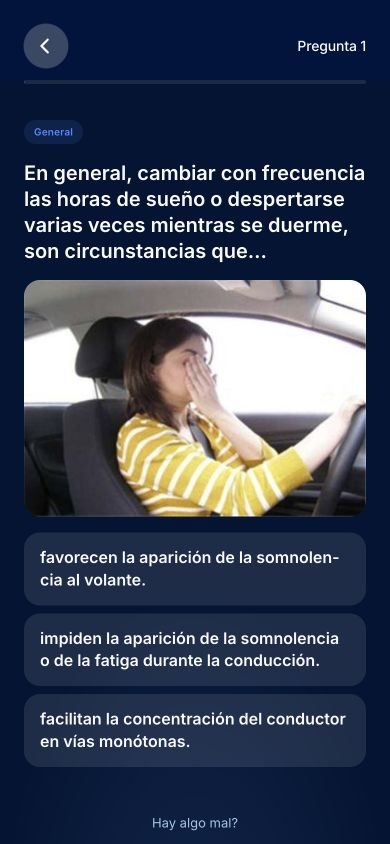

DetenciónParadaEstacionamiento
Help explain difficult terms
Learners struggled with double negatives and terms with similar meanings. This led me to include answer explanations and a visual glossary, so they could look up the idea behind a question.
Preparing for Spain’s driving theory exam can turn into memorising answers. I wanted to help learners understand why an answer is right and return to the questions they find difficult. I researched, designed, built and launched Drivo Test for web and iPhone.
A place to practise,
understand,
and come back to.


I saw room for a simpler mobile experience, with clearer explanations and fewer barriers to practice. Before building, I spoke with learners and tested ideas with them. Three themes helped me decide what to focus on.
Learners struggled with double negatives and terms with similar meanings. This led me to include answer explanations and a visual glossary, so they could look up the idea behind a question.
Learners described studying on a commute or during a break. I kept practice separate from full mock exams, so people could choose how to study with the time they had.
Recognising a familiar answer does not always mean understanding the rule. I wanted learners to revisit both their mistakes and the answers they were unsure about.
This became the focus for the first version. I chose four ways to study: practice with feedback, a question library, a visual glossary and mock exams. A review loop connects them by bringing difficult questions back.
When someone is learning, they need to know why an answer is wrong. When they want to check their progress, hints can get in the way. One mode could not serve both needs well.
I made practice and mock exams separate choices on the home screen. Practice gives feedback after each answer. Mock exams use 30 questions, allow up to three mistakes and offer no hints, so learners can try an exam-style test.
I also added a searchable question library and a visual glossary. This lets learners stop and explore a topic when an explanation or road term needs more attention.

I kept the question, image and answers in one view to make each step easy to follow. A report option lets learners flag a question or explanation that needs checking.
If the app only tracks wrong answers, it misses the questions someone got right by guessing. I wanted learners to be able to say, “I need to look at this again.”
I added an “Unsure” action and a way to review difficult questions. Daily sessions combine mistakes due for review, recent doubts, questions from weaker topics and some previously learned questions.
The app uses answer history to decide when to bring questions back. The aim is to make review more useful than choosing every question at random. I still need to measure whether this helps learners remember the rules.
The review loop changes with the learner’s answer history and the questions available.
I wanted learners to use a real product. That meant building the study features, saving progress and giving people a way to tell me when something was wrong.
I used AI as a development partner to turn my designs into a working web app. I then used Capacitor to bring the web app to iPhone and launched it on the App Store.
I added progress tracking so learners can see their activity, accuracy and questions to review. I also added reports for unclear wording, incorrect answers and explanations, giving me specific feedback to act on.
I took Drivo Test from learner conversations to a free web and iPhone app. Friends and family are helping me find issues and improve the experience. The next step is to test with more learners and measure how they use it over time.
So far, the outcome is a launched product. I do not yet have evidence that it improves retention or exam pass rates. I would need that evidence before adding a score that predicts exam readiness.
I made the product decisions, used AI to help build them, and brought the app to launch. My next job is to use learner feedback and real usage to decide what to improve.